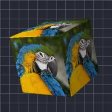

কিউব

লেয়ারটিকে গোলাকার কোণ ও লাইটিংসহ ঘুরন্ত কিউবের প্রতিটি পৃষ্ঠে মুড়ে দেয়।
Cube লেয়ারটিকে একটি 3D কিউবের মুখে মোড়ায়। Rotation X, Rotation Y এবং Rotation Z এটি ঘোরায় (ঘুরন্ত কিউবের জন্য এগুলো অ্যানিমেট করুন), Size এবং Scale এর আকার পরিবর্তন করে, Perspective গভীরতার ইফেক্ট, এবং Shading, Light Angle ও Shine লাইটিং নিয়ন্ত্রণ করে। দেখুন Camera layers and 3D।
সেটিংস
| সেটিং | ধরন | রেঞ্জ | ডিফল্ট |
|---|---|---|---|
| রোটেশন X | কোণ | -3600° থেকে 3600° | -20° |
| রোটেশন Y | কোণ | -3600° থেকে 3600° | -35° |
| রোটেশন Z | কোণ | -3600° থেকে 3600° | 0° |
| সাইজ | সংখ্যা | 0.05 থেকে 5 | 0.7 |
| স্মুথিং | সংখ্যা | 0 থেকে 1 | 0.15 |
| পজিশন | পয়েন্ট (X, Y) | -5000 px থেকে 5000 px | 0 px, 0 px |
| স্কেল | সংখ্যা | 0.05 থেকে 10 | 1 |
| পার্সপেক্টিভ | সংখ্যা | 0 থেকে 1 | 0.5 |
| শেডিং | সংখ্যা | 0 থেকে 1 | 0.6 |
| আলোর কোণ | কোণ | -3600° থেকে 3600° | 135° |
| শাইন | সংখ্যা | 0 থেকে 1 | 0.3 |